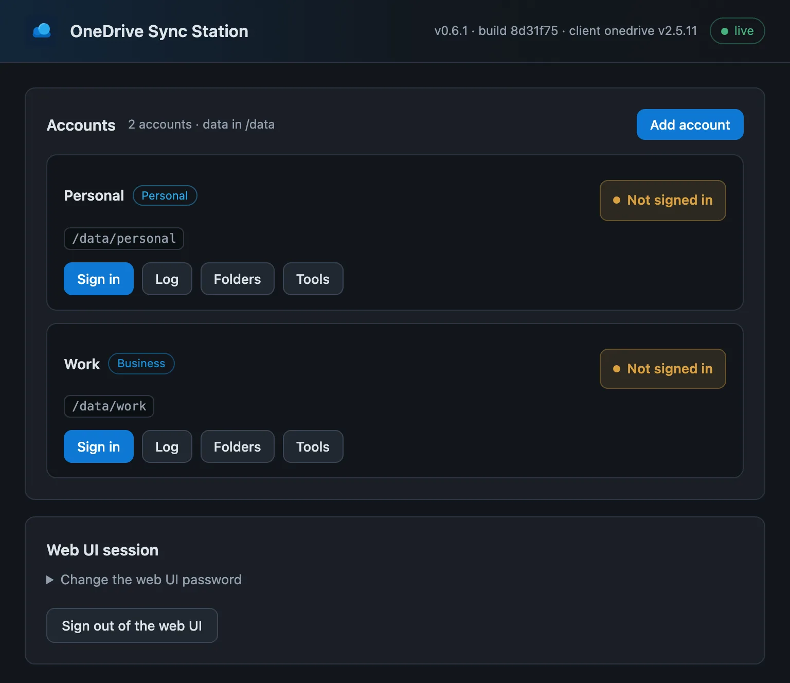
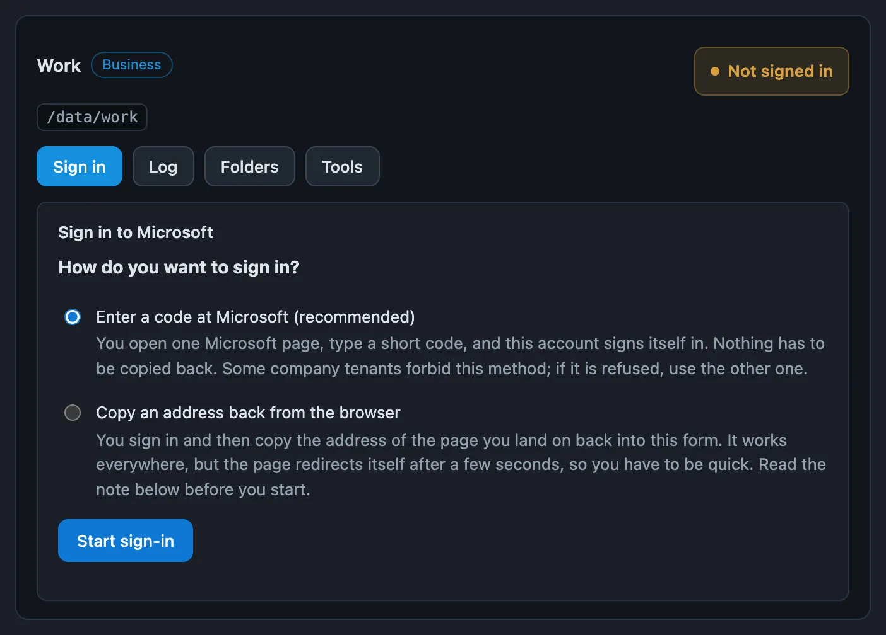

Unraid · Docker · web UI · Beta
Several OneDrive accounts, synced on your Unraid server.
One container with a web UI that syncs OneDrive Personal, OneDrive Business and SharePoint document libraries side by side, each with its own folder and its own sign-in. Built on the OneDrive Client for Linux by abraunegg.
Install on Unraid Source on GitHub
Early software: all three account types have been synced end to end on real hardware, with one pair of eyes on the code. Do not point it at data you have no other copy of. Independent, unofficial project, not affiliated with Microsoft.

Install
On Unraid, use Community Applications. Anywhere else, any Docker host on amd64 works. The image is published from the beta channel, so the tag is :beta; there is no :latest to pull yet.
Unraid Community Applications
- Open Apps and search for
OneDrive Sync Station. The card carries a BETA banner. Install it. - Check the paths. Data should be a dedicated share, it holds nothing but synced files. Back up Config: it holds the sign-ins. Then Apply.
- Open the WebUI, set a password and add your first account.
Without CA: Docker tab, Add Container, and paste the template URL.
https://raw.githubusercontent.com/benjaminmue/unraid/main/templates/onedrive-sync-station.xmlThe template maps the web UI to host port 8485 by default. The container listens on 8080.
CLI docker run
docker run -d --name onedrive-sync-station \
-p 8485:8080 \
-e PUID=99 -e PGID=100 -e TZ=Europe/Zurich \
-v /mnt/user/appdata/onedrive-sync-station:/config \
-v /mnt/user/OneDrive:/data \
--restart unless-stopped \
ghcr.io/benjaminmue/onedrive-sync-station:betaCLI Docker Compose
services:
onedrive-sync-station:
image: ghcr.io/benjaminmue/onedrive-sync-station:beta
container_name: onedrive-sync-station
ports:
- "8485:8080"
environment:
- PUID=99
- PGID=100
- UMASK=0002
- TZ=Europe/Zurich
volumes:
- /mnt/user/appdata/onedrive-sync-station:/config
- /mnt/user/OneDrive:/data
restart: unless-stoppedPaths and defaults follow the Unraid template. Then open http://<server>:8485. The README also shows how to build the image from source with Compose.
What it does
The OneDrive Client for Linux syncs one account per configuration and is driven from a terminal. This project runs one client process per account inside a single container and puts a web UI on top, so several accounts can be added, signed in, narrowed down and watched from the browser.
- Several accounts, one container
- Each account runs its own sync client with its own configuration and its own folder. No Docker socket, no container per account.
- Personal, Business, SharePoint
- All three are added the same way. A SharePoint document library is an account of its own.
- Sign-in from the browser
- No terminal, no
docker exec. You sign in on Microsoft's own pages; only the resulting authorisation code passes through the UI. - SharePoint lookup
- Finds the drive IDs of a site's document libraries with the credentials of a business account that is already signed in.
- Selective sync
- A folder list to tick per account, backed by an editor for the client's
sync_listrules and a dry-run preview. - Nothing downloads unasked
- A new account does not start on its own. It can read its folder list first in a run that downloads nothing, so the choice comes before the traffic.
- Config and data apart
/configholds settings and sign-ins,/dataholds nothing but synced files, one subfolder per account.- Unraid file ownership
- Runs as
99:100withUMASK 0002, so synced files are0664and folders0775and open over an SMB share.
Adding an account
- Set a password for the web UI. It is meant for the LAN and gated by its own password.
- Add account, give it a name and pick the type.
- Sign in. Business and SharePoint can use a device code: enter a short code on one Microsoft page, nothing is copied back. Personal accounts open a Microsoft link and paste the address of the resulting blank page back into the UI.
- Decide what to sync: look at the folders first, go straight to the selection, or take everything. Pressing Start begins the sync.
No client secret and normally no app registration of your own. If a tenant requires administrator approval, the account offers an admin consent URL for them. The device code is not offered for personal accounts because Microsoft blocks that flow for them, as documented upstream.

Volumes and variables
| Container path | Purpose |
|---|---|
/config | Web UI password hash, account registry, per-account client config and refresh tokens. Back it up. |
/data | Synced files only, one subfolder per account. Map to a dedicated share. |
| Variable | Default | Purpose |
|---|---|---|
PUID / PGID | 99 / 100 | Ownership of everything the container writes |
UMASK | 0002 | 0664 files, 0775 folders |
TZ | Europe/Zurich | Timezone for the timestamps in the UI |
ADMIN_PASSWORD | unset | Recovery only: replaces the web UI password on start, then remove it |
FIX_PERMISSIONS | true | Repair ownership drift on start |
WEBUI_PORT | 8080 | Port of the web UI inside the container |
Full reference in the README.
Before you start
- Beta, with one pair of eyes on it. The Community Applications entry points at
:beta. No independent review has happened yet. Keep another copy of anything you sync. - Removing a folder from the selection deletes its local copy. Saving the selection restarts the account with
--resync; folders you untick are removed under the data path on the next run and stay in OneDrive. Use Dry run first. - Do not expose the web UI to the internet. It can sign in to Microsoft accounts and reaches every synced file. Put a reverse proxy with its own authentication in front of it if it has to leave the LAN.